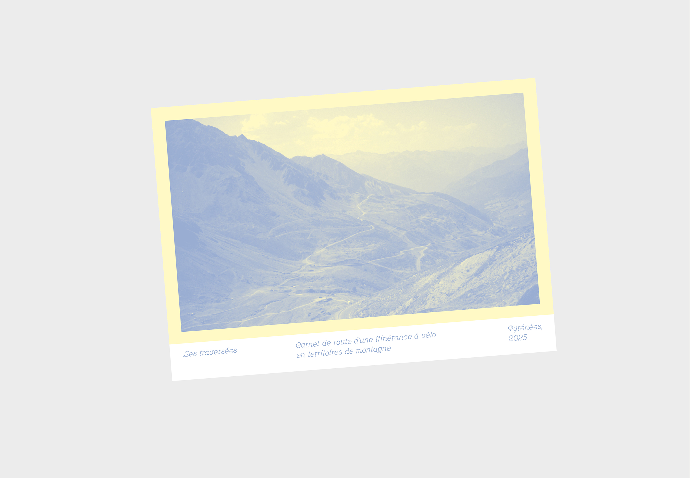
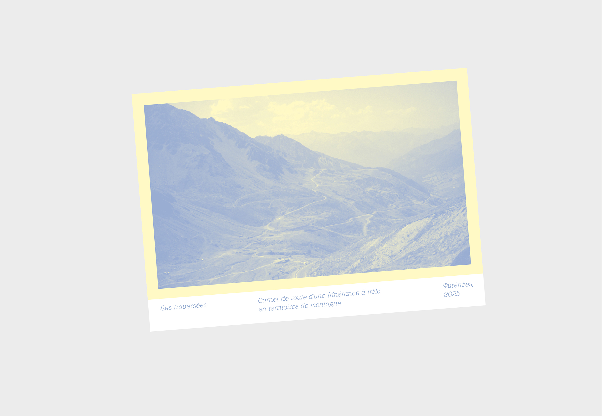
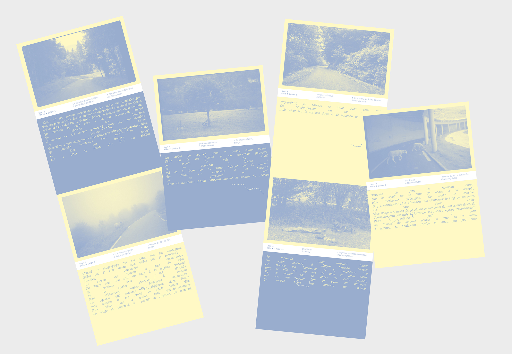
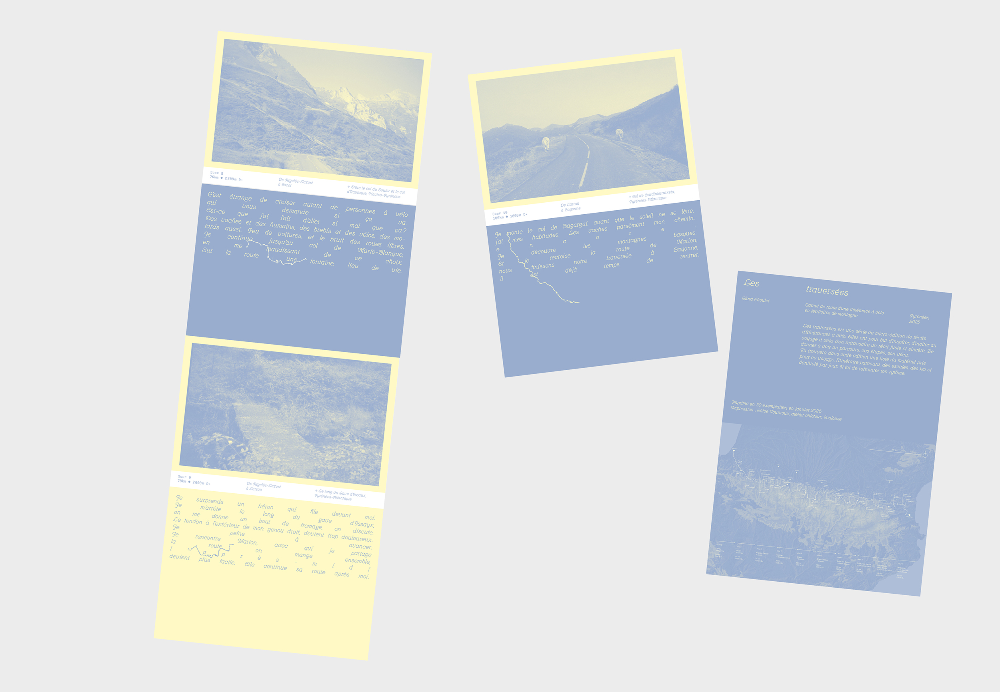
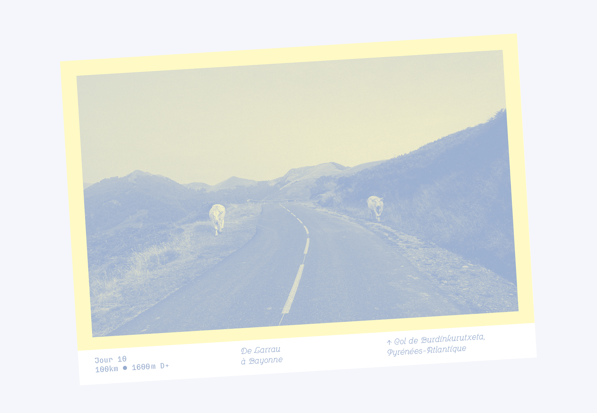
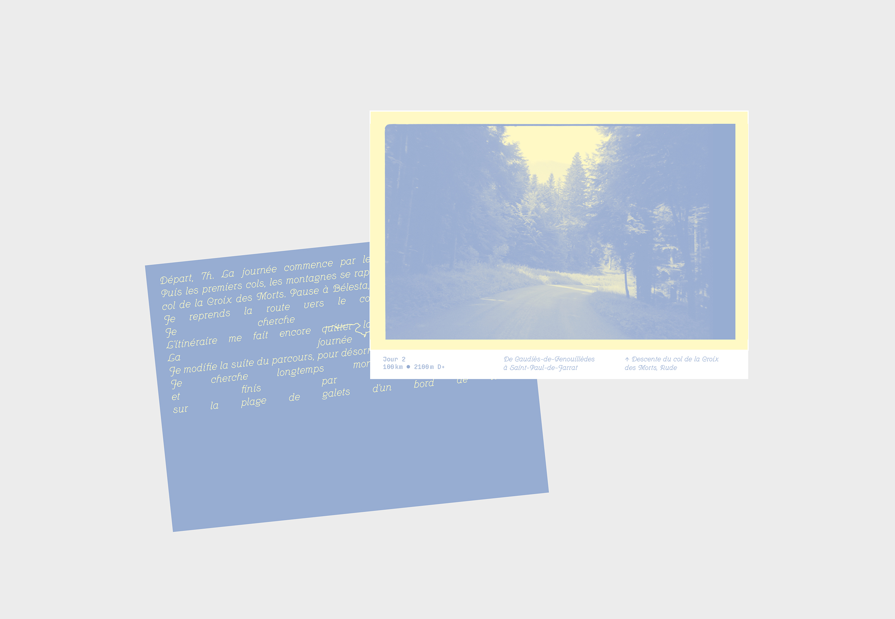
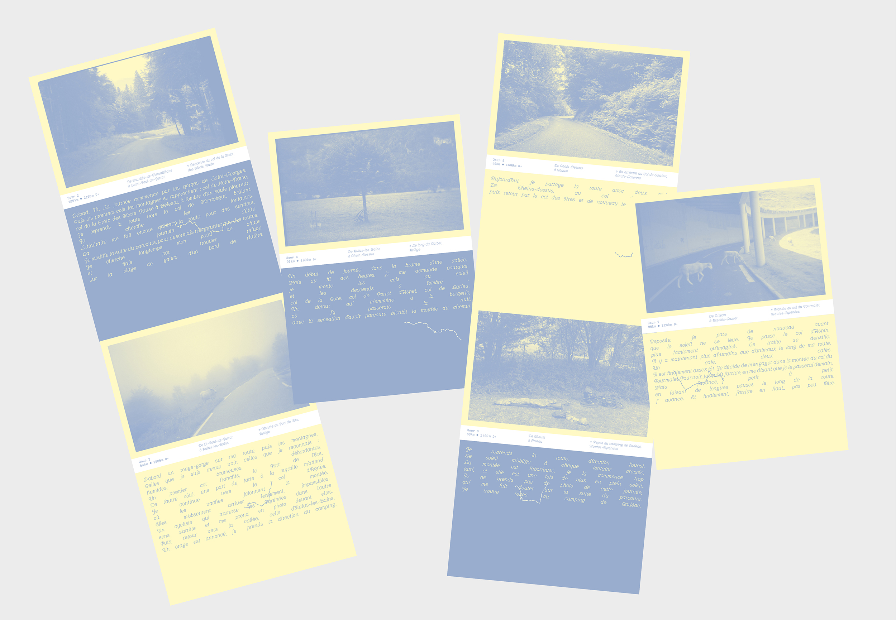
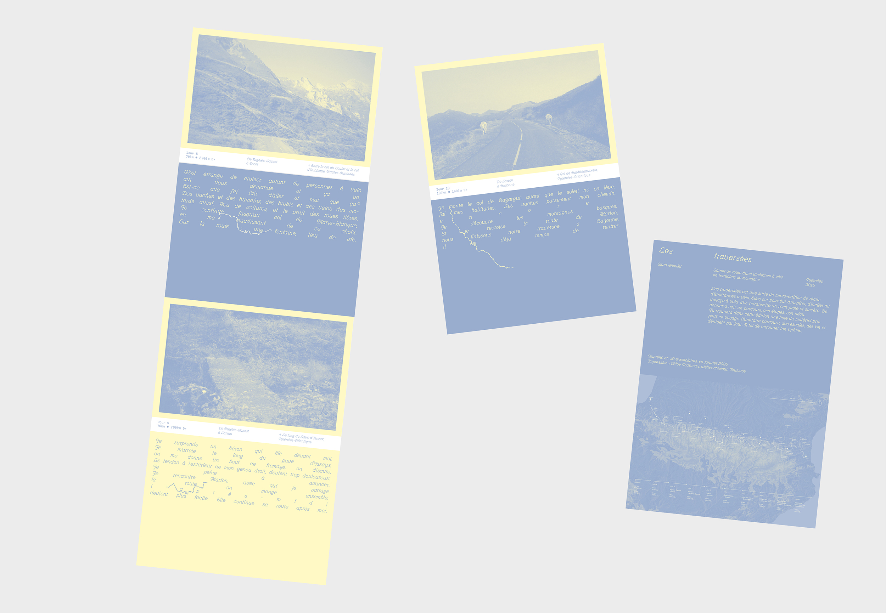
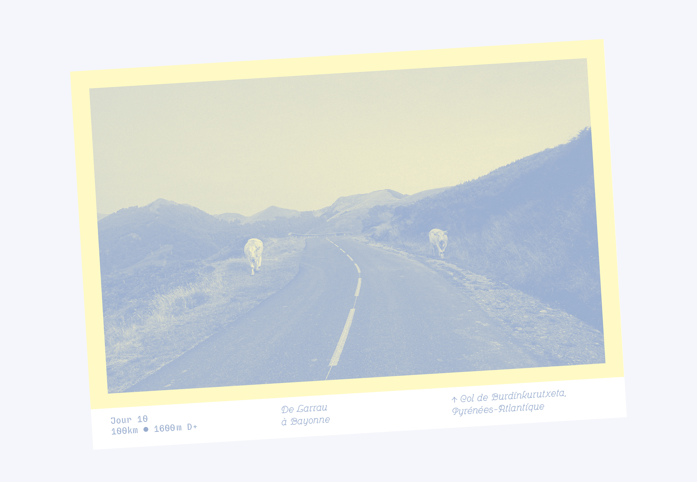
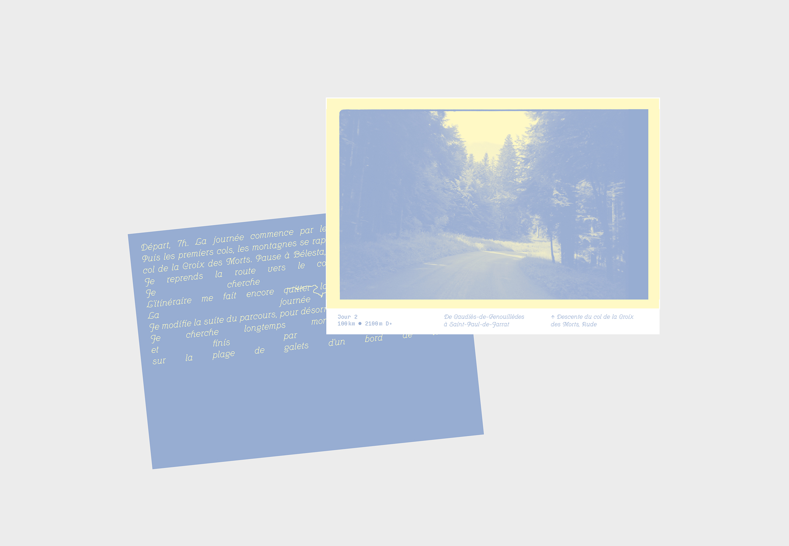

Les traversées
Les traversées est une série de micro-édition de récits d’itinérances à vélo.
Elles ont pour but d’inspirer, d’inciter au voyage à vélo, d’en retranscrire un récit juste et sincère, de donner à voir un parcours, ses étapes, son vécu,
le matériel et équipement amené, les kilomètres et dénivelés par jour, tel un petit guide pratique pour s'élancer sur les routes.
 

 






